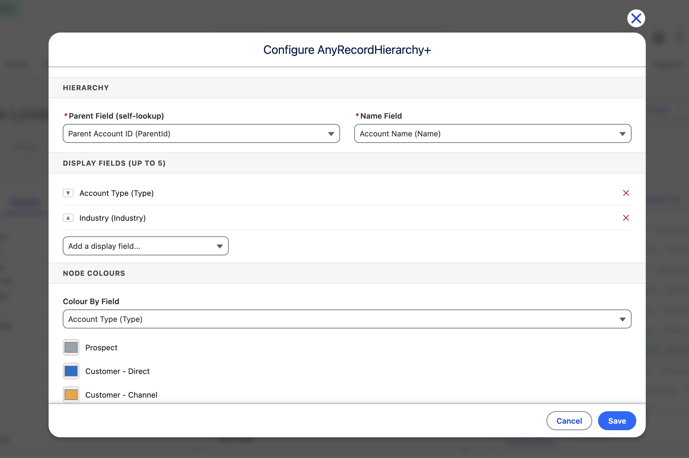
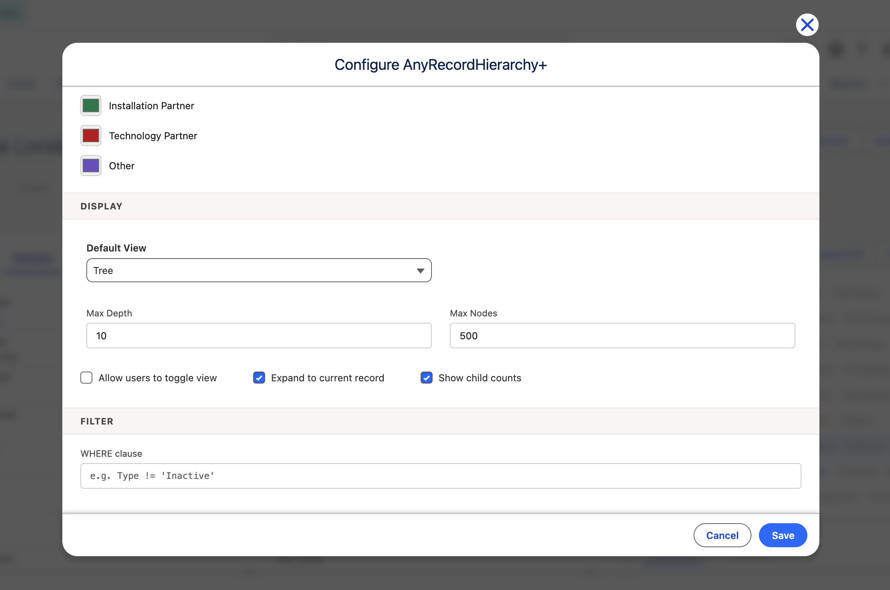
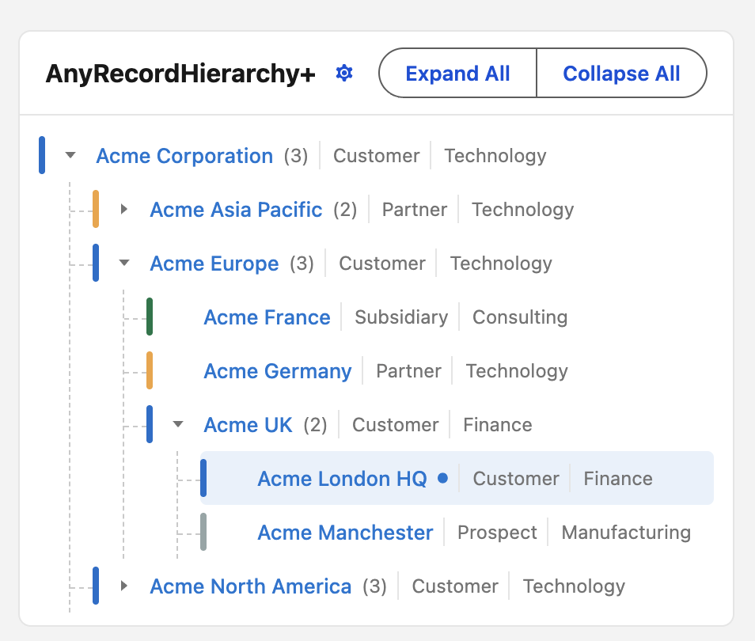

1Before you start
AnyRecordHierarchy+ is a Lightning Web Component that runs on Lightning record pages. It shows the ancestors and descendants of the current record by following a self-referencing lookup field.
- Lightning Experience with permission to edit record pages in Lightning App Builder.
- An object with a self-lookup — a lookup field that points back to the same object. Standard examples include Account (via
ParentId) and any custom object with a self-referencing lookup.
No external services are involved. The component reads records through standard Salesforce APIs, and every query respects object and field-level security.
2Install the package
- AnyRecordHierarchy+ will soon be available on the AppExchange. Once listed, choose Get It Now on the listing page. We recommend installing in a sandbox first.
- Log in to the target org and choose who the package is installed for. Install for Admins Only is the safest default; you will grant access explicitly in the next step.
- Approve the installation. The package adds the
AnyRecordHierarchy+component, one small custom object (Configuration) that stores hierarchy settings, theAnyRecordHierarchy+ Adminpermission set and a set of translatable labels.
3Assign permissions
Two permission sets are included:
| Permission set | Purpose | Assign to |
|---|---|---|
AnyRecordHierarchy+ Admin | Create and edit hierarchy configurations | Admins and anyone who will set up hierarchies |
AnyRecordHierarchy+ User | View the hierarchy on record pages | All users who need to see the hierarchy |
Assign via Setup → Permission Sets, or use a Permission Set Group for bulk assignment.
4Add to a record page
- Navigate to a record of the object you want the hierarchy on (e.g. an Account record).
- Click the gear icon → Edit Page to open Lightning App Builder.
- In the components panel on the left, search for AnyRecordHierarchy+.
- Drag the component onto the page layout. The main content area or a full-width region works best for the table view.
- Save and Activate the page (choose Org Default or App/Profile assignment as needed).
5Configure the hierarchy
Once the component is on the page, click the gear icon on the component header to open the configuration modal.
Hierarchy section
| Field | Description |
|---|---|
| Parent Field (self-lookup) | The lookup field that points to the same object. For Account this is ParentId. For custom objects, pick your self-referencing lookup. |
| Name Field | The field displayed as the node label. Usually the Name field. |

Display fields
Add up to five display fields that appear as columns in the table view or as badges in the tree view. These can be any field on the object — Type, Industry, BillingCity, Owner, or custom fields.
Node colours
Choose a Colour By Field (a picklist field) and assign a colour to each picklist value. Nodes in the tree view get a coloured bar on the left; table rows show a coloured indicator. This makes it easy to spot patterns — customers vs partners, active vs inactive, or any other category.
Display section
| Setting | Description |
|---|---|
| Default View | Tree (compact indented tree) or Table (full columns). Users can toggle between views if allowed. |
| Max Depth | How many levels deep the hierarchy goes. Default is 10. |
| Max Nodes | The maximum number of records loaded. Default is 500. Keeps large hierarchies performant. |
| Allow users to toggle view | When checked, users see a toggle to switch between tree and table view. |
| Expand to current record | Auto-expands the tree to show and highlight the record the user is currently viewing. |
| Show child counts | Displays the number of direct children next to each node. |

Filter
Add a WHERE clause to exclude certain records from the hierarchy. For example, Type != 'Inactive' hides inactive accounts. The filter is applied when the hierarchy loads.
Click Save and the hierarchy appears immediately.
6Using the hierarchy
- Expand / Collapse — Click the arrow next to any node, or use the Expand All / Collapse All buttons in the header.
- Navigate — Click any record name to navigate to that record's page. The hierarchy reloads centred on the new record.
- Current record — The record you are viewing is highlighted with a dot and a subtle background colour.
- Child counts — When enabled, each node shows the number of direct children in parentheses.
- Tree vs Table — Tree view is compact and shows colour bars. Table view shows the full set of display fields as columns.

7Troubleshooting
The component shows "No hierarchy found"
- Make sure the current record's object has a self-referencing lookup field.
- Check that the record is part of a hierarchy — it needs either a parent or children (or both) to display anything.
- Verify the user has the
AnyRecordHierarchy+ Userpermission set and read access to the object and fields.
Some records are missing from the tree
- Check field-level security — the user must have read access to the parent lookup field, name field and all display fields.
- Check the WHERE clause filter — it may be excluding records you expect to see.
- Check Max Depth and Max Nodes — increase them if the hierarchy is larger than the defaults.
The gear icon doesn't appear
Only users with the AnyRecordHierarchy+ Admin permission set can see the configuration gear icon. Assign this permission set to the user who needs to configure hierarchies.